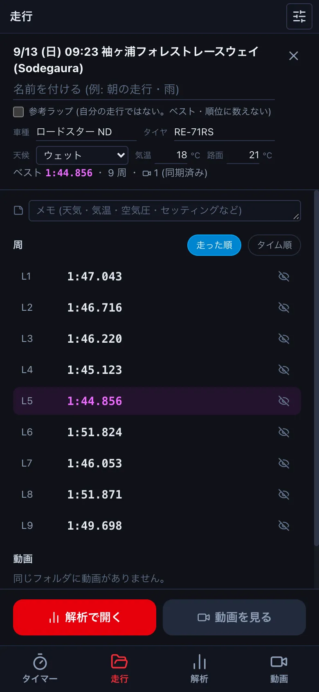
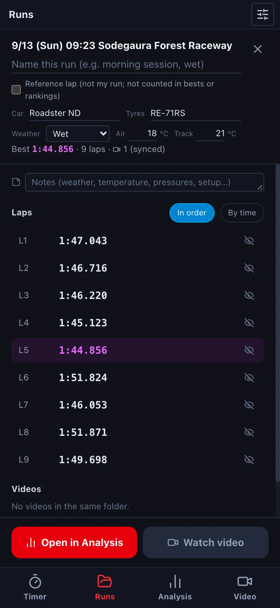
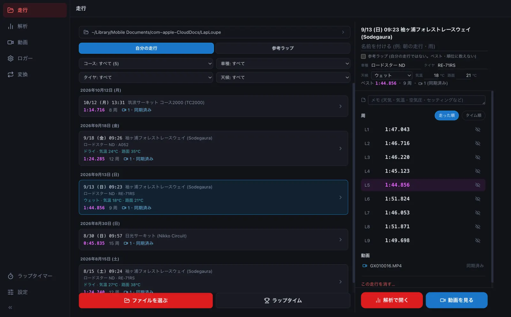
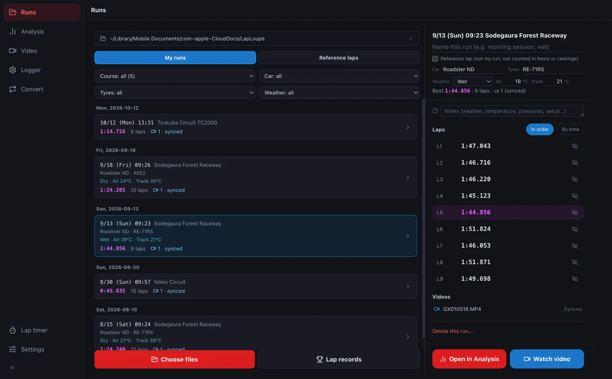
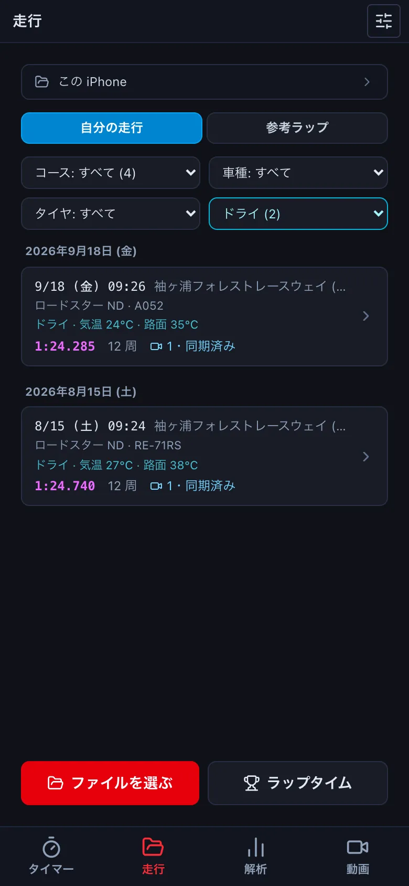
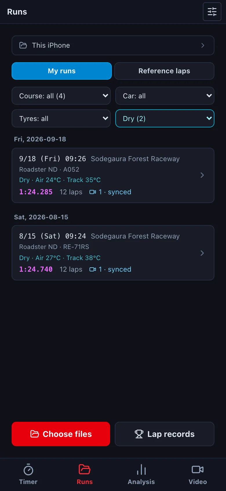
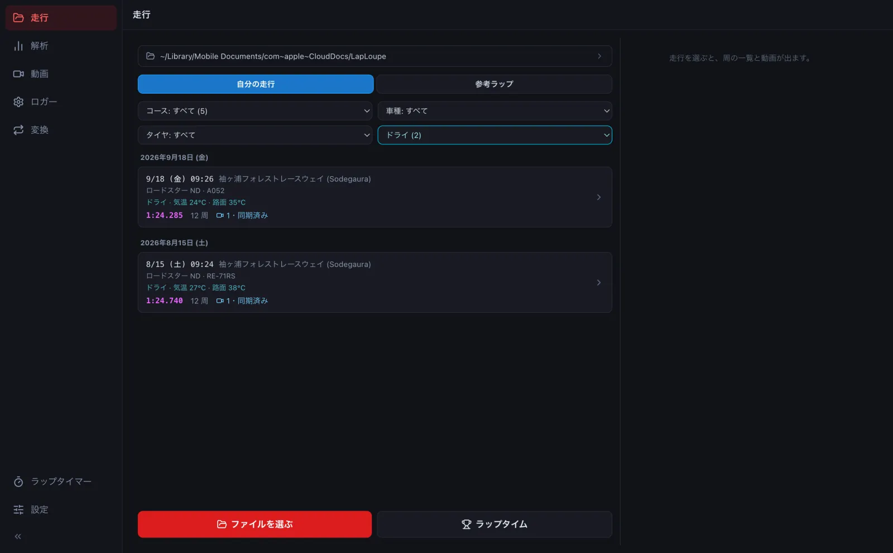
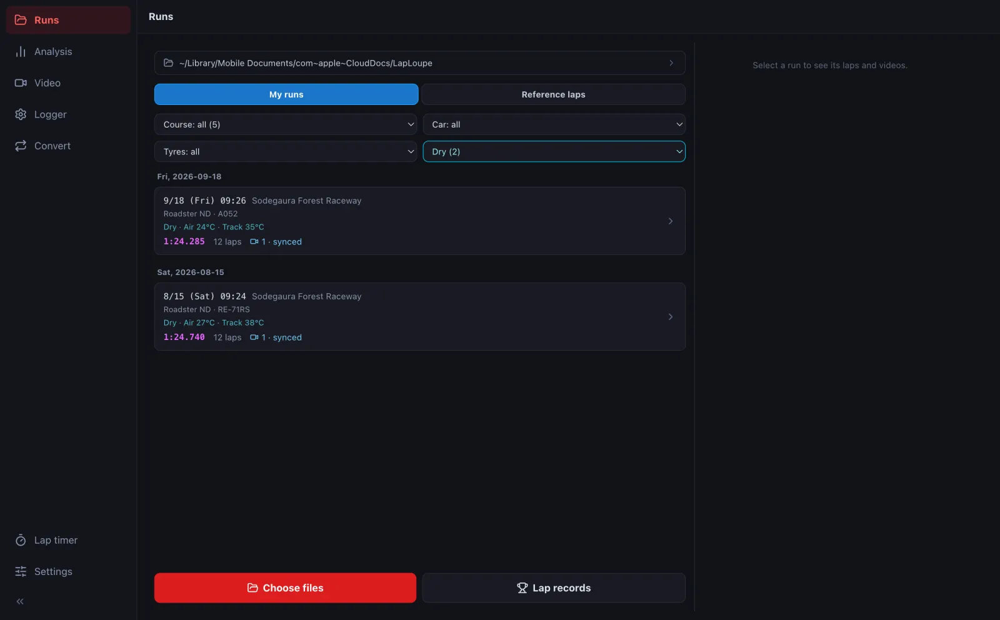

走行を整理する (名前・車種・タイヤ・天候)Organise your runs (names, car, tyres, weather)
走行に名前・メモ・車種・タイヤ・天候・気温を書いておくと、一覧に出て、それで絞り込めます。どれも書かなくてかまいません (書いた人だけ使えます)。Give runs a name, notes, car, tyres, weather and temperatures; they show in the list and you can filter by them. All of it is optional.
ブラウザ版には「走行」の画面がありません。保管場所 (走行のファイルを置くフォルダ) を使えないためです。ログのファイルは ファイルを開く で開いてください。The browser version has no Runs screen, because it cannot use a storage folder. Open log files with Open file.
-
走行を押して詳細を開き、名前・車種・タイヤを書き、天候 (ドライ・ダンプ・ウェット・ヘビーウェット) を選び、気温・路面温度を書きます。欄を離れると保存します。Open a run and fill in the name, car and tyres, choose the weather (dry, damp, wet, heavy wet) and enter air and track temperatures. Each field saves when you leave it.




-
書いた値は一覧に出ます。一覧の上のドロップダウンで、コース・車種・タイヤ・天候を絞れます (書いた走行がある項目だけ出ます)。Entered values show in the list. Use the drop-downs above it to filter by course, car, tyres and weather (each appears only once some run has a value).




- ラップタイム にも同じ絞り込みがあり、ベスト・順位は絞った中で数えます (例: ウェットのベスト)。Lap records has the same filters, and bests and rankings count only the filtered runs (e.g. your best in the wet).
- 速い人のログなど自分のではない走行は、参考ラップ に印を付けると「参考ラップ」の側に分かれ、自分のベスト・順位に数えなくなります。Tick Reference lap for runs that are not yours (a faster driver's log, say); they move to the reference side and are left out of your bests and rankings.
- いらない走行は、詳細のいちばん下の この走行を消す… で消します。消すファイルの一覧を確かめてから消します (同じ日のほかの走行や、付けていない動画は残します)。Delete a run with Delete this run… at the bottom of its details. You confirm the list of files first; other runs from the same day and unattached videos are kept.